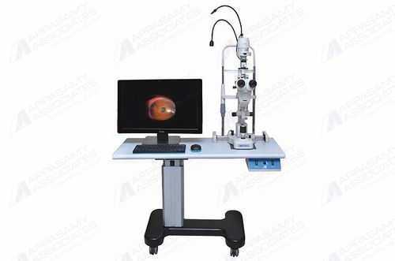
The Dynamiq Slit Lamp Camera System at Sadbhaav Clinic combines high-resolution imaging with traditional slit lamp examination, enabling doctors to capture detailed photographs and videos of the cornea, lens, iris, and retina for accurate diagnosis of conditions like cataracts, corneal ulcers, uveitis, and diabetic eye disease. It serves as an invaluable documentation tool that builds comprehensive photographic medical records for monitoring disease progression, supporting teleconsultation, and providing strong clinical evidence for treatment decisions at Sadbhaav Clinic. By integrating this advanced system, Sadbhaav Clinic elevates both diagnostic precision and patient experience, as doctors can visually show patients their own eye conditions in real time, fostering better understanding, trust, and compliance with treatment.
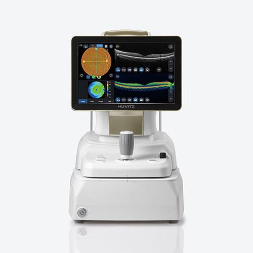
The Huvitz Octavius is an advanced automated refraction and examination system that streamlines the complete eye examination workflow at Sadbhaav Clinic, delivering fast and highly accurate measurements of fundus, disc and cornea in a single, integrated unit. It significantly reduces examination time per patient, allowing Sadbhaav Clinic to handle a higher volume of patients efficiently without compromising on diagnostic accuracy or quality of care. By incorporating the Huvitz Octavius, Sadbhaav Clinic demonstrates its dedication to adopting cutting-edge technology that enhances both the patient experience and the clinical precision expected of a modern, trusted eye care center.
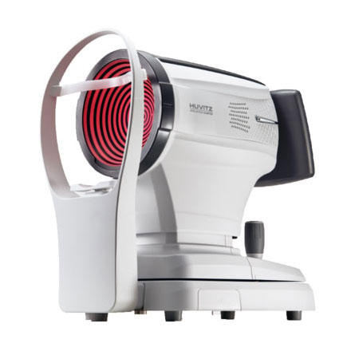
An optical biometer is a cornerstone instrument in Sadbhaav Clinic for accurately measuring the eye's axial length, corneal curvature, and anterior chamber depth, which are essential for calculating the precise intraocular lens (IOL) power before cataract surgery. It ensures outstanding surgical outcomes by minimizing post-operative refractive errors, reducing patients' dependence on glasses after cataract surgery, and elevating the overall standard of care at Sadbhaav Clinic. Investing in an optical biometer reflects Sadbhaav Clinic's commitment to delivering modern, precise, and patient-centered ophthalmology that builds long-term trust and reputation in the community.
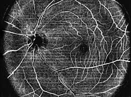
OCT Angiography (OCTA) is a revolutionary, non-invasive retinal imaging technology that provides detailed, three-dimensional visualization of the retinal and choroidal vasculature without the need for injectable dyes like fluorescein or indocyanine green, making it safer, faster, and more comfortable for patients. It enables early detection and precise monitoring of a wide range of sight-threatening conditions including diabetic retinopathy, age-related macular degeneration, glaucoma, retinal vein occlusions, and choroidal neovascularization by revealing subtle vascular changes and flow abnormalities at the capillary level that may be missed by conventional imaging. The ability to perform repeated imaging sessions without any risk of dye-related adverse reactions makes OCTA an invaluable tool for longitudinal disease monitoring and treatment response evaluation, allowing clinicians to make highly informed, timely decisions regarding anti-VEGF therapy and other interventions. By incorporating OCT Angiography, an eye clinic elevates its diagnostic capability to the highest modern standard, demonstrating a commitment to precision retinal care, improved patient outcomes, and a comprehensive approach to managing complex posterior segment diseases.
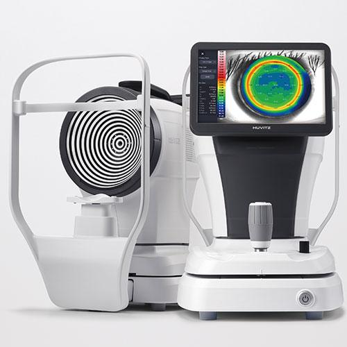
The Huvitz Corneal Topographer is an advanced diagnostic instrument that provides detailed, high-resolution mapping of the corneal surface curvature, shape, and power distribution, enabling precise detection of corneal irregularities such as keratoconus, corneal ectasia, astigmatism, and post-surgical corneal changes that may not be apparent through routine examination. It plays a critical role in pre-operative screening for LASIK and other refractive surgeries by identifying contraindications and ensuring patient safety, while also providing essential keratometry data for accurate IOL power calculation in cataract surgery and precise contact lens fitting including specialty lenses for irregular corneas. The instrument's ability to generate detailed color-coded topographic maps, elevation maps, and pachymetry data allows clinicians to monitor corneal disease progression over time, evaluate treatment responses such as corneal collagen cross-linking for keratoconus, and make highly informed clinical decisions, making the Huvitz Corneal Topographer an indispensable tool for any eye clinic committed to delivering comprehensive, precise, and modern corneal and refractive care.
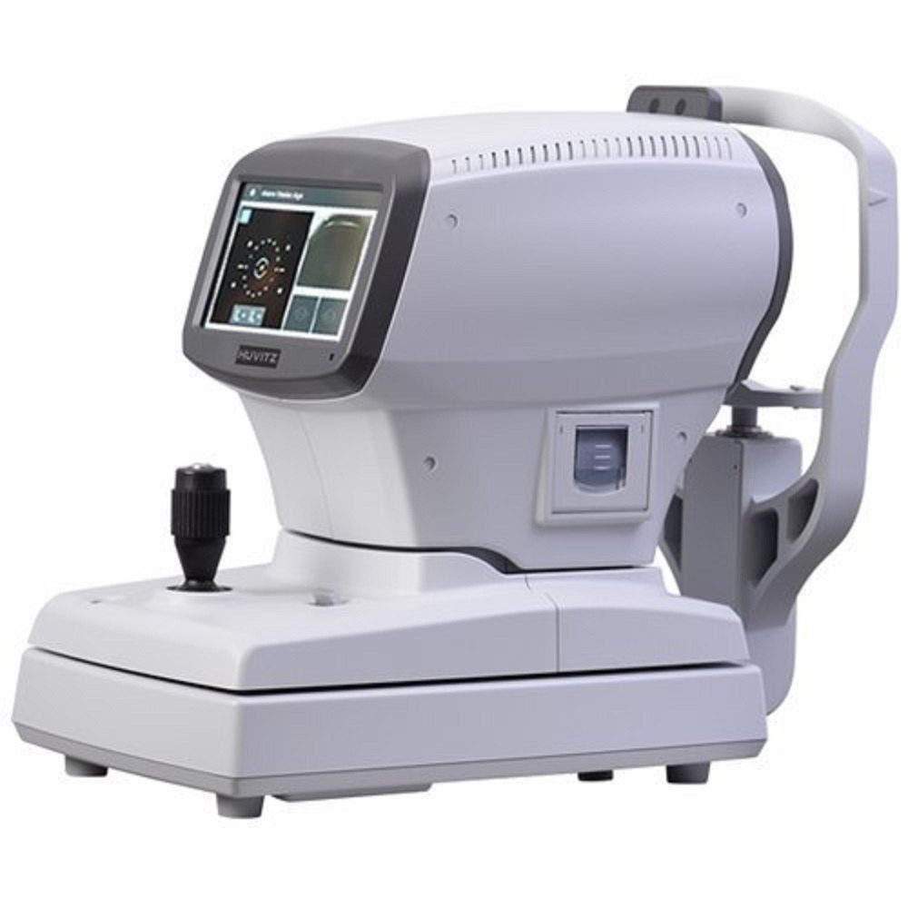
The Huvitz NCT-1P is a fully automated non-contact tonometer that measures intraocular pressure (IOP) quickly and accurately without the need for anesthetic eye drops, using a gentle puff of air to detect pressure levels and making it highly comfortable and convenient for patients of all ages. It features auto-tracking, auto-alignment, and auto-shot technology that ensures precise and reproducible IOP measurements in seconds, with multiple readings averaged automatically to enhance reliability and minimize measurement error. The large LCD display, built-in printer, and data connectivity allow seamless documentation and integration with the clinic's electronic medical records, while its compact, ergonomic design and user-friendly interface make it an essential and efficient screening tool at Sadbhaav Clinic for early detection and monitoring of glaucoma and other conditions associated with elevated intraocular pressure.
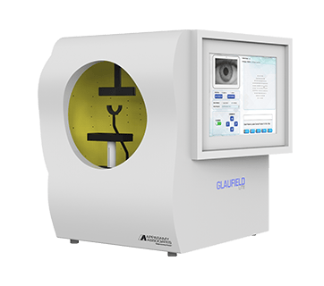
The Glaufeld Lite Perimeter is a vital diagnostic instrument at Sadbhaav Clinic that performs automated visual field testing to detect and monitor glaucoma, neurological disorders, and retinal diseases by mapping the complete field of vision including peripheral sight that patients may not notice losing on their own. It enables early detection of glaucomatous damage before significant vision loss occurs, allowing the doctors at Sadbhaav Clinic to initiate timely treatment and closely monitor disease progression through serial visual field comparisons over time. By incorporating the Glaufeld Lite Perimeter, Sadbhaav Clinic strengthens its glaucoma management capabilities, demonstrating a commitment to comprehensive, proactive eye care that protects patients' long-term vision and establishes the clinic as a trusted center for advanced ophthalmic diagnosis in the community.
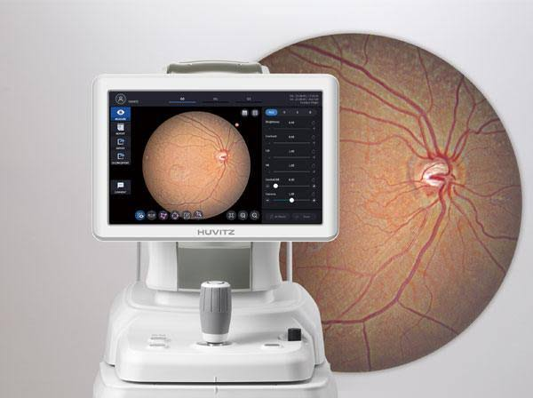
A fundus photography machine allows us to capture detailed images of the retina, optic nerve, and blood vessels, enabling early detection of serious conditions like diabetic retinopathy, glaucoma, macular degeneration, and hypertensive retinopathy. It serves as a vital documentation tool for monitoring disease progression over time by comparing images across visits, ensuring timely treatment decisions. Beyond diagnosis, it also enhances patient education by visually showing them the condition of their own eyes, improving compliance with treatment and follow-up care.
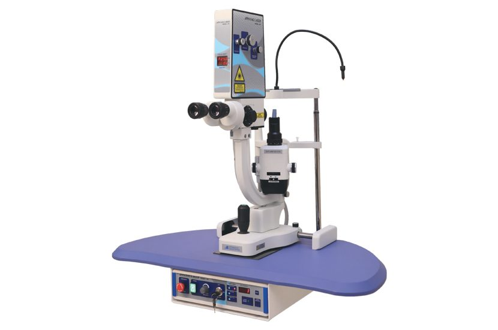
Sadbhaav Eye & Dental Clinic is equipped with the latest YAG laser machine, which is essential in an eye clinic because it provides a non-invasive, painless way to treat posterior capsule opacification ("secondary cataracts") and instantly restore clear vision after cataract surgery. Additionally, it serves as a critical tool for preventing and managing angle-closure glaucoma by safely creating micro-openings in the iris to reduce elevated eye pressure. All of this is possible without any incisions or operating theatre. It enables fast, safe, office-based treatments that restore and protect vision, making it one of the most valuable and frequently used instruments in modern ophthalmology.
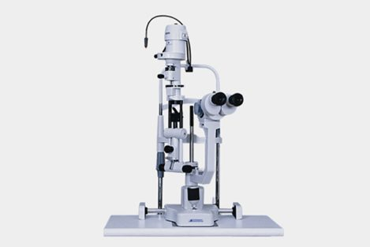
Sadbhaav Eye & Dental Clinic is equipped with a 5-step Appasamy slit lamp for more accurate eye examination and detailed evaluation of eye disorders.
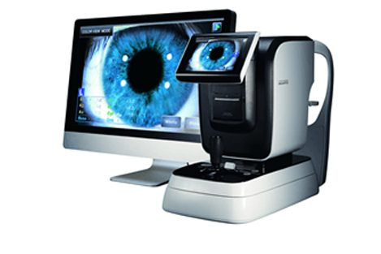
The Huvitz ARK-8000 is a fully automatic auto refracto-keratometer featuring high-precision measurement of sphere, cylinder, axis, and corneal curvature with a wide measurement range to accommodate all refractive errors. It offers auto-tracking, auto-alignment, and auto-shot technology for rapid measurements in seconds, combined with a fogging system that relaxes accommodation for more accurate readings, ensuring patient comfort and clinical efficiency. The large LCD display, built-in printer, and seamless data connectivity allow instant result documentation and integration with electronic medical records, while its compact, ergonomic, and durable design makes it an ideal, user-friendly instrument for a busy clinical environment like Sadbhaav Clinic, supporting everything from routine refraction and contact lens fitting to cataract pre-operative keratometry workup.
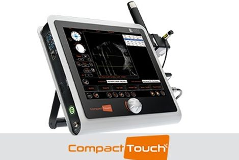
Compact Touch includes all the latest Quantel Medical innovations in the field of ophthalmic imaging. The Compact Touch is a best-in-class A-scan machine with accurate results comparable to the IOL Master. It combines the best image and measurement performance in its category with outstanding ergonomics.
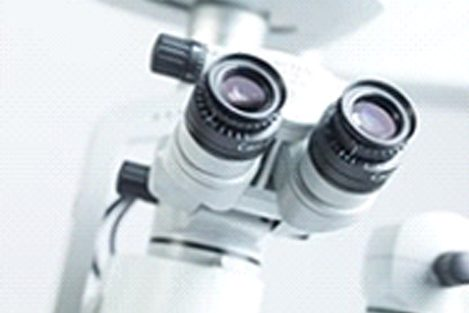
Sadbhaav's eye operation theatre is equipped with an excellent Zeiss LUMERA optics microscope. The LUMERA microscope has superior contrast, resolution, and clarity, giving less stress to patients and providing exceptional illumination.
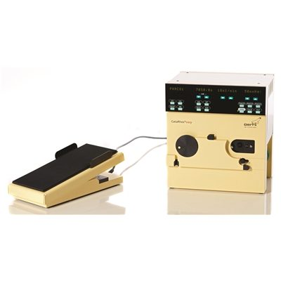
CataRhex® easy employs components and design concepts proven under harsh conditions in hundreds of thousands of surgeries every year in India. CataRhex® easy masters 2.2 mm and 1.6 mm incision sizes too, keeping the clinic ready for the implantation of future premium IOLs.
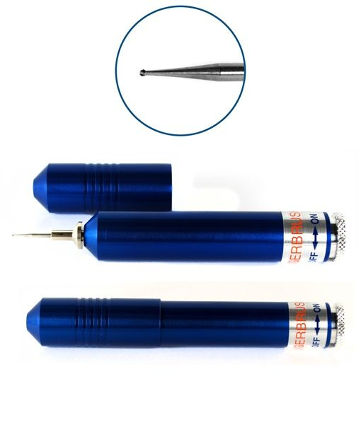
The Algerbrush Diamond Burr is a vital instrument in an eye clinic used primarily for the precise and gentle removal of corneal rust rings and foreign bodies, as well as for superficial keratectomy procedures, offering a more controlled and less traumatic alternative to traditional manual debridement methods. Its rotating diamond-coated burr tip allows the clinician to efficiently debride corneal epithelium and Bowman's layer with minimal damage to surrounding healthy tissue, making it especially valuable in procedures like phototherapeutic keratectomy preparation, recurrent corneal erosion treatment, and anterior basement membrane dystrophy management. The Algerbrush Diamond Burr enhances clinical outcomes by reducing procedure time, minimizing patient discomfort, and promoting faster corneal healing compared to conventional blade or needle techniques, making it an indispensable tool for any eye clinic committed to delivering precise, safe, and effective anterior segment care.
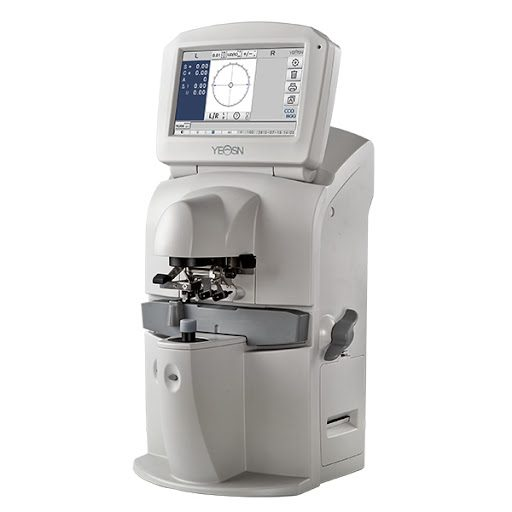
The CCQ-800 Auto Lensmeter is an essential instrument in an eye clinic that automatically and accurately measures the optical parameters of spectacle lenses including sphere, cylinder, axis, prism, and base, providing precise readings in seconds that replace the time-consuming manual lensometry process. It plays a critical role in verifying the accuracy of newly dispensed spectacle prescriptions, checking existing glasses brought in by patients, and confirming that lenses match the intended prescription before dispensing, thereby ensuring the highest quality of optical care and patient satisfaction. With its advanced digital display, auto-alignment technology, UV transmission measurement capability, and data connectivity for seamless integration with electronic records, the CCQ-800 Auto Lensmeter streamlines the optical workflow, reduces human error, and reflects a clinic's commitment to precision, efficiency, and modern standards of comprehensive eye care.
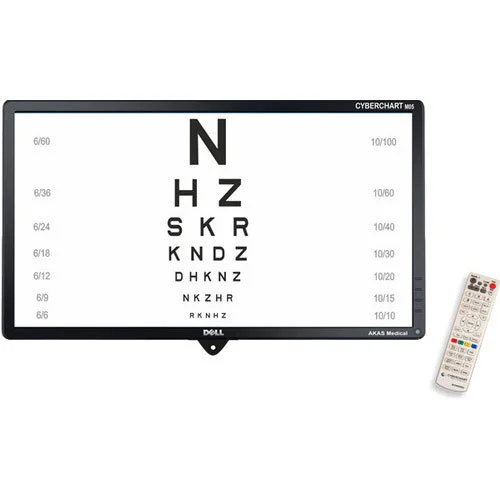
The Cyberchart Digital Visor at Sadbhaav Clinic replaces traditional printed vision charts with a high-resolution digital display system that allows doctors to instantly switch between various visual acuity tests, color vision charts, and contrast sensitivity tests with precision and consistency, greatly streamlining the refraction and examination workflow. It enhances the overall patient examination experience at Sadbhaav Clinic by ensuring standardized, hygienic, and highly accurate vision testing while saving valuable clinical time, reflecting the clinic's commitment to modern, technology-driven eye care.
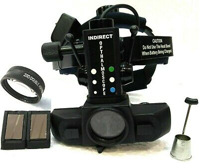
A standard indirect ophthalmoscope with the aid of a Volk 20D lens enables in-depth examination of the retina.
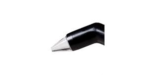
With a precision of ± 5 microns, the pachymetry module allows fast and accurate corneal thickness measurements. Built-in IOP correction calculation tables provide the ability to adjust for variations in intra-ocular pressure. For refractive surgery, several measuring modes and corneal maps are available.
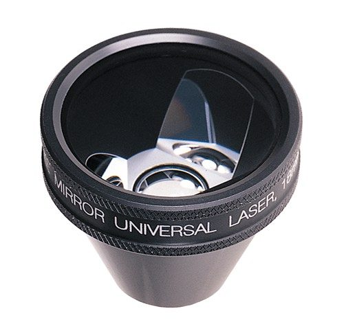
Goldman's 3 Mirror Lens is an indispensable diagnostic contact lens used in eye clinics that allows comprehensive examination of the entire fundus including the peripheral retina, vitreous base, anterior chamber angle, and central macula using a slit lamp, providing a wide and detailed view of ocular structures that cannot be visualized with standard non-contact lenses. The three strategically angled mirrors within the lens enable simultaneous examination of different zones of the eye — the central mirror for posterior pole and macula evaluation, the intermediate mirror for peripheral retina, and the most angled mirror for the extreme periphery and drainage angle — making it an all-in-one diagnostic tool for detecting retinal tears, detachments, lattice degeneration, diabetic retinopathy, glaucomatous angle changes, and vitreoretinal pathologies. It is also extensively used as a therapeutic lens for performing laser procedures including panretinal photocoagulation, laser retinopexy, and gonioplasty, making Goldman's 3 Mirror Lens one of the most versatile and clinically valuable instruments in any comprehensive eye clinic committed to advanced retinal and glaucoma management.
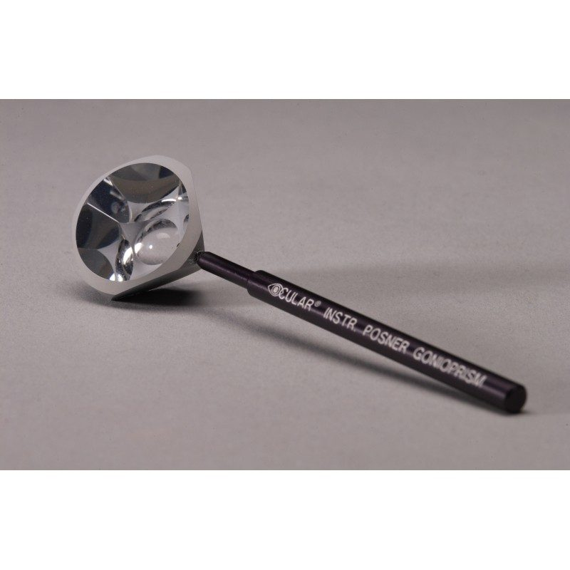
The Posner Indentation Gonioscope is a specialized diagnostic contact lens of paramount importance in an eye clinic, used to directly visualize and examine the anterior chamber angle — the critical drainage pathway of the eye — allowing clinicians to accurately classify angle anatomy, identify angle closure, and differentiate between open-angle and closed-angle glaucoma with precision. Its unique indentation capability allows the examiner to apply gentle pressure on the cornea during gonioscopy, which helps distinguish between appositional and synechial angle closure by observing whether the angle opens with indentation, providing crucial information that directly guides glaucoma treatment decisions including the need for laser iridotomy or surgical intervention. The Posner Indentation Gonioscope is an irreplaceable tool for comprehensive glaucoma evaluation, enabling clinicians to detect plateau iris configuration, identify neovascular membranes, foreign bodies, and tumors in the angle, and assess the success of glaucoma surgeries, making it an essential instrument for any eye clinic dedicated to thorough, accurate, and advanced glaucoma diagnosis and management.
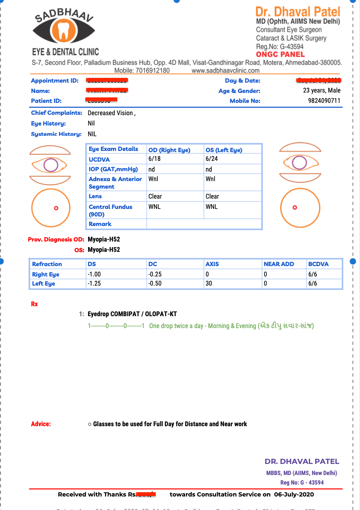
Our EMR system generates computerised records which make patient flow management very easy and also provide a detailed examination report with prescribed treatment along with instructions to the patients. Our records are among the very few that provide complete examination reports to the patients.
We put the smile on your face and the sparkle in your eyes.
Our doctors are qualified from the prestigious AIIMS New Delhi. They are the best and experts in their respective fields.
Our doctors have more than 10 years of experience in their respective fields.
Our humble and polite staff is always ready to serve you the best.
Dr Dhaval Patel has conducted many eye camps in Africa and visits yearly for the same.